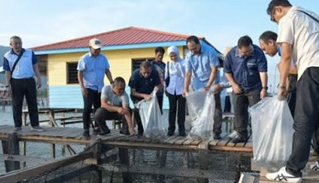
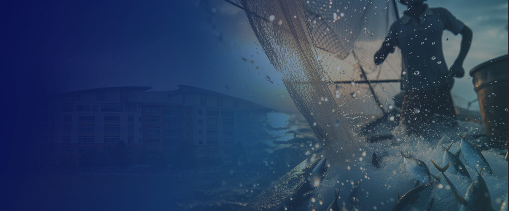
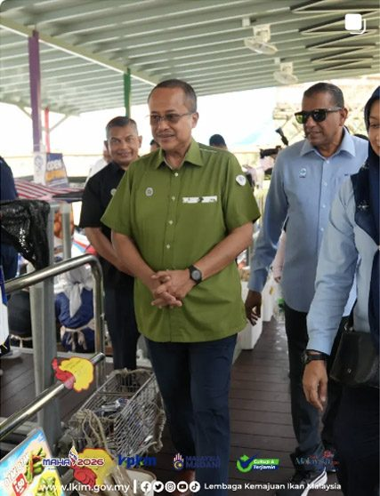
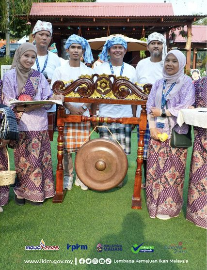
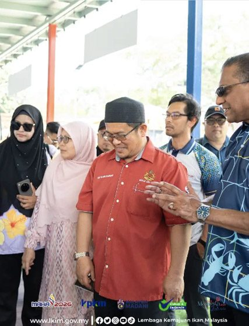
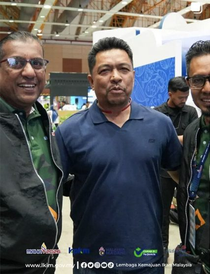
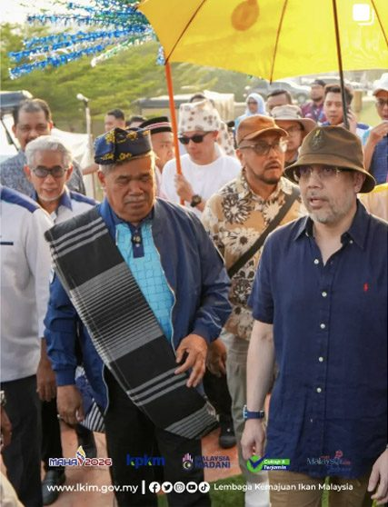
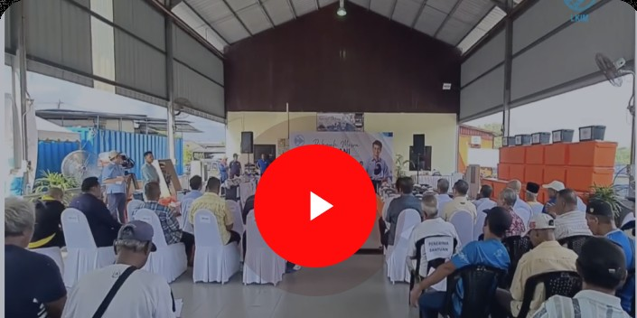
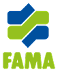
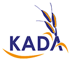

Tender

28 Ogos 2026

LKIM memacu kesejahteraan komuniti nelayan melalui bantuan, infrastruktur pendaratan, pemasaran hasil laut dan khidmat sokongan yang menyeluruh di seluruh Malaysia.
Akses bantuan, khidmat sokongan dan kemudahan yang disediakan LKIM khas untuk nelayan dan keluarga mereka.
Bantuan tunai berkala kepada nelayan berdaftar bagi meringankan kos sara hidup harian dan menampung kekangan musim tengkujuh.
Perlindungan insurans sosial semasa aktiviti penangkapan ikan.
Ketahui Lanjut
Lawatan Tapak MAHA 2026
Persembahan Gong Tradisional
Lawatan Rasmi Gerai MAHA 2026
Sesi Bergambar Bersama Tetamu
Lawatan Pameran LKIM
Rakaman dan video-video terkini dari Youtube LKIM
Tonton Lebih Banyak VideoIkuti perkembangan terbaharu tender, sebut harga dan program LKIM.


